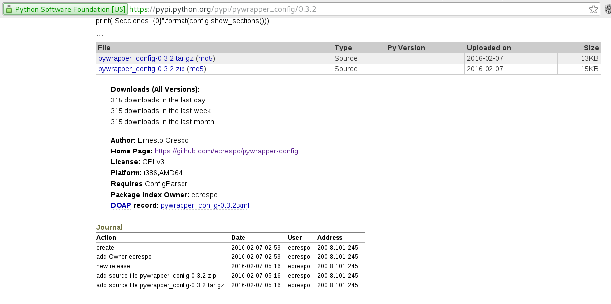

Crear un paquete python del módulo pywrapper_config
Posted on dom 07 febrero 2016 in Tutorial Python • 2 min read
Hace unos años escribí un artículo que explicaba como crear un paquete python (Crear un paquete python de un programa).
En este artículo se empaquetará el módulo python pywrapper_config el cual fue tema del siguiente artículo (Módulo que permite acceder a archivos de configuración).
La diferencia con el primer artículo será que en este caso se tocará como subir el paquete a los repositorios de paquetes de Python, donde se podrá usar el comando pip para instalar dicho módulo.
El módulo pywrapper_config está alojado en github en el siguiente enlace.
El archivo setup.py contiene lo siguiente:
#!/usr/bin/env python
from distutils.core import setup
data_files = [('share/pywrapper_config',['pywrapper_config.py','CHANGELOG','README.md','LICENSE'])]
setup(name='pywrapper_config',
version='0.3.2',
description='Wrapper to ConfigParser',
author='Ernesto Crespo',
author_email='ecrespo@gmail.com',
url='https://github.com/ecrespo/pywrapper-config',
license = "GPLv3",
platforms=['i386','AMD64'],
py_modules = ['pywrapper_config'],
data_files =data_files,
requires = ['ConfigParser'],
)
Acá se define el nombre de la aplicación, su versión, la descripción de la aplicación, el autor con su correo, el url donde se aloja la aplicación, la licencia que usa, las plataformas que soporta, el módulo que provee, otros archivos adicionales y que se requiere para que el módulo funcione.
El archivo MANIFEST.in contiene:
include conf-examples/*.conf LICENSE README.md CHANGELOG
El siguiente paso es crear una cuenta en el sitio de pypi.
Crear el archivo .pypirc con el siguiente contenido:
[pypirc]
servers = pypi
[server-login]
username:<miusuario>
password:<miclave>
Este archivo define que el programa se subirá al repositorio pypi usando el usuario y clave ya definidos.
Para crear los paquetes fuentes se usará el siguiente comando:
python setup.py sdist --format=zip,gztar
Este comando generará dos archivos en el directorio dist:
dist
├── pywrapper_config-0.3.2.tar.gz
└── pywrapper_config-0.3.2.zip
Se crearon los paquetes tar.gz y .zip.
Lo siguiente es registrar la aplicación:
python setup.py sdist register -r pywrapper_config
Por último para subir los paquetes se ejecuta el siguiente comando:
python setup.py sdist --format=zip,gztar upload -r pywrapper_config
Al buscar en la lista de paquetes de python se tiene lo que muestra la siguiente figura:

Al darle clic se tiene la siguiente información:

La información que se muestra al empaquetador es la siguiente:

Lo que quedaría a continuación es el proceso para crear un paquete Debian y un rpm.
Referencias:
- Distribir aplicaciones python
- The Python package index
- Distribuyendo programas Python en el Pypi
- How to submit a package to Pypi
¡Haz tu donativo! Si te gustó el artículo puedes realizar un donativo con Bitcoin (BTC) usando la billetera digital de tu preferencia a la siguiente dirección: 17MtNybhdkA9GV3UNS6BTwPcuhjXoPrSzV
O Escaneando el código QR desde la billetera: